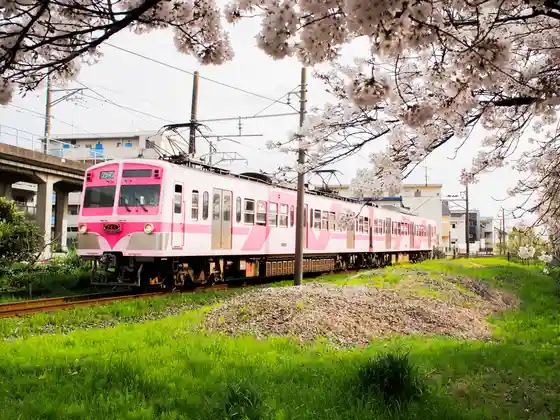
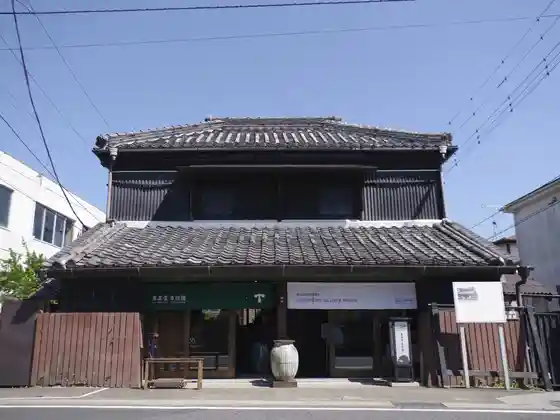
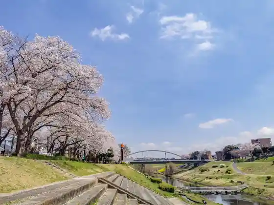

Ochado Garden Mizudai Orchard
Nagareyama, Chiba · 04-7174-4451 · Official / source link
Ryu Tetsu
Nagareyama, Chiba · 04-7158-0117 · Official / source link

Shirami Rin Museum / Nagareyama
Nagareyama, Chiba · Official / source link
Nagareyama Mangekyo Gyararii & Museum
Nagareyama, Chiba · 04-7190-5100 · Official / source link

Unga Suihen Park
Nagareyama, Chiba · 04-7150-6092 · Official / source link

Issa Soju Memorial Museum
Nagareyama, Chiba · 04-7150-5750 · Official / source link
Akagi Shrine
Nagareyama, Chiba · 04-7168-1047 · Official / source link
Nagareyama Nosambutsu Chokubai Tokoro (Shinsen Shokumi)
Nagareyama, Chiba · 04-7155-7015 · Official / source link
Kondo Isami Jinya Ato
Nagareyama, Chiba · 04-7168-1047 · Official / source link
Asama Shrine
Nagareyama, Chiba · 04-7168-1047 · Official / source link
Osugi Shrine
Nagareyama, Chiba · Official / source link
Nagareyama Ritsu Museum
Nagareyama, Chiba · 04-7159-3434 · Official / source link
Nagareyama Hon Town Machinaka Museum
Nagareyama, Chiba · 04-7168-1047 · Official / source link
Okazaki Hatchomiso to Shirami Rin no Ajiwa I Koza / Nagareyama Shirami Rin Museum
Nagareyama, Chiba · Official / source link
Nitto Jozo Shirotamari Shikomi Koza / Nagareyama Shirami Rin Museum
Nagareyama, Chiba · Official / source link